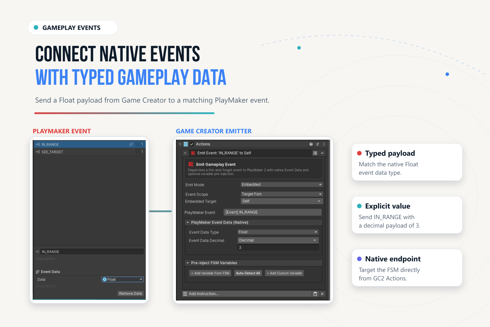

Events & Signals#
A local PlayMaker event, bridge name broadcast, native GC2 Signal, and typed Gameplay Event have different destinations and data contracts.
Choose the Right Message#
| Mechanism | Sender / receiver | Data and boundary |
|---|---|---|
| Local PlayMaker event | Send PlayMaker Event → one resolved FSM | Event name; active graph handles transition. |
| Named bridge broadcast | Broadcast Named PlayMaker Event → active FSMs and listeners | String name; not native GlobalEventAsset dispatch. |
| Native GC2 Signal | Emit GC2 Signal → native Signal listeners | Signal identity and invoker. |
| Signal wait in PlayMaker | GC2 Signal → Wait for GC2 Signal | Listens while active. |
| Gameplay Event | Embedded emitter or reusable event asset → configured endpoints | Typed data and optional variable pre-injection. |
| Lifecycle observation | FSM state/finish → GC2 Trigger | Selected lifecycle change. |
GC2 to a Local FSM#
Add Send PlayMaker Event at PlayMaker/Send PlayMaker Event. Set Target, unique FSM Name, and exact Event Name. Create a matching transition or handler in the graph.
PlayMaker owns delivery semantics, including startup. A disabled/inactive FSM is not a queued receiver. The bridge adds no arbitrary retry queue.
Named Bridge Broadcasts#
PlayMaker/Broadcast PlayMaker Global Event displays Broadcast Named PlayMaker Event. Its matching Trigger, PlayMaker/On PlayMaker Global Event, displays On Named PlayMaker Bridge Event.
They communicate through the integration's name-based bridge. They do not automatically forward unrelated native GlobalEventAsset dispatches or EventData. Use unique names and inspect active receivers when broadcasts have surprising effects.
Native GC2 Signals#
Use Emit GC2 Signal under Game Creator 2/Events, with the Signal identity and Invoker. In GC2, configure a native Signal Trigger with the same normalized identifier.
For the reverse direction, add Wait for GC2 Signal to a state. Configure received event, optional invoker output, and timeout. It subscribes while active and unsubscribes on exit. A Signal sent before listening starts is not a stored message.
GC2 normalizes Signal IDs during serialization. Prefer Enemy-Alerted and compare normalized values on both ends.
Typed Gameplay Events#
Emit Gameplay Event appears at PlayMaker/Events/Emit Gameplay Event in GC2 and as an integration action in PlayMaker. It supports embedded configuration and reusable Gameplay Event assets.

- Use embedded configuration for a one-off connection, or a reusable Gameplay Event asset for a shared definition.
- Select scope, target FSM or template where applicable, and exact native event endpoint.
- Choose the EventData type expected by that event and supply a compatible value.
- Configure explicit pre-injection fields if FSM variables must be initialized before dispatch.
- Add the matching transition/handler and verify data in Play Mode.
A reusable asset records identity, metadata, endpoints, and typed target variables. It does not make an ordinary name broadcast carry EventData. Keep the richer emitter distinct from Broadcast Named PlayMaker Event.
Lifecycle Triggers#
Use On PlayMaker State Enter, On PlayMaker State Exit, and On PlayMaker FSM Finished when GC2 should observe lifecycle changes. Specify target/state identity; prefer full paths for nested states.
Avoid Feedback Loops#
Give requests and notifications different names, such as Request-Open and Door-Opened. Do not echo the same event from every receiver. Repeated native delivery is not globally deduplicated. Trace one interaction, identify every sender, and remove unintended round trips.